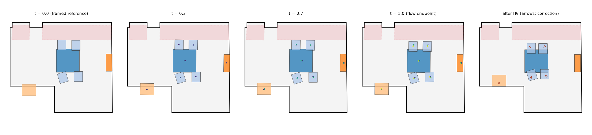

Every number is read from the evaluation files of the final model; the tests, the paired bootstrap over reference rooms and the metrics are those of the main paper (§5.1). Differences are the flow's placement (or the named placement) minus the other one, after the same plan decoding and \(\Pi_\theta\) unless stated; * marks \(p<0.05\).
Table S1. Placement ablation on the test split's 700 targets: the flow's placement replaced, the same plan decoding, assets and \(\Pi_\theta\). ▲ / ▼: significantly better / worse than the flow.
| placement (then the same \(\Pi_\theta\)) | kept | rel. kept ↑ | \(D\) ↓ | wall kept ↑ | torn ↓ | out ↓ | collide ↓ |
|---|---|---|---|---|---|---|---|
| IntentFlow: the flow's placement | 0.91 | 0.69 | 0.059 | 0.87 | 0.076 | 0.002 | 0.062 |
| no transport: the flow's source (framed reference; added pieces at their pose-bank start) | 0.91 | 0.67 ▼ | 0.060 | 0.88 | 0.080 | 0.002 | 0.062 |
| no transport: that source perturbed as in training | 0.91 | 0.55 ▼ | 0.120 ▼ | 0.78 ▼ | 0.145 ▼ | 0.001 | 0.062 |
| LEGO-Net's poses for the reference's pieces (added pieces at their start) | 0.91 | 0.62 ▼ | 0.116 ▼ | 0.77 ▼ | 0.145 ▼ | 0.001 | 0.073 ▼ |
Without transport (the framed reference): relations kept 0.67 against 0.69 (worse, p=0.002); \(D\) 0.060 against 0.059 (not significantly different, p=0.409); torn pairs 0.080 against 0.076 (not significantly different, p=0.678); wall contacts kept 0.88 against 0.87 (not significantly different, p=0.178); collisions 0.062 against 0.062 (not significantly different, p=0.960); out of room 0.002 against 0.002 (not significantly different, p=0.925). With the perturbed source: relations kept 0.55 against 0.69 (worse, p<0.001); \(D\) 0.120 against 0.059 (worse, p<0.001); torn pairs 0.145 against 0.076 (worse, p<0.001); wall contacts kept 0.78 against 0.87 (worse, p<0.001); collisions 0.062 against 0.062 (not significantly different, p=0.980); out of room 0.001 against 0.002 (not significantly different, p=0.406). With LEGO-Net's poses: relations kept 0.62 against 0.69 (worse, p=0.006); \(D\) 0.116 against 0.059 (worse, p<0.001); torn pairs 0.145 against 0.076 (worse, p<0.001); wall contacts kept 0.77 against 0.87 (worse, p<0.001); collisions 0.073 against 0.062 (worse, p=0.005); out of room 0.001 against 0.002 (not significantly different, p=0.254).
Table S2. The flow minus the framed reference by target group and by framing difficulty (tertiles of the share of the reference's footprint that framing puts outside the target, and of the outline IoU of the framed reference with the target); after \(\Pi_\theta\) and, in the last columns, before it.
| difficulty | rel. kept ↑ | \(D\) ↓ | out before \(\Pi_\theta\) ↓ | \(D\) before \(\Pi_\theta\) ↓ |
|---|---|---|---|---|
| outside: easy | +0.011 (p=0.326) | +0.003* (p=0.015) | +0.016 (p=0.185) | −0.000 (p=0.991) |
| outside: medium | +0.039* (p<0.001) | −0.005* (p=0.016) | +0.004 (p=0.769) | +0.002 (p=0.288) |
| outside: hard | +0.010 (p=0.392) | −0.000 (p=0.784) | −0.017* (p=0.031) | −0.004* (p<0.001) |
| iou: easy | +0.045* (p<0.001) | −0.002 (p=0.323) | +0.026 (p=0.123) | +0.005* (p<0.001) |
| iou: medium | +0.006 (p=0.564) | +0.001 (p=0.379) | +0.000 (p=0.977) | −0.001 (p=0.457) |
| iou: hard | +0.013 (p=0.329) | −0.002 (p=0.263) | −0.021* (p=0.006) | −0.005* (p<0.001) |
The flow's gain does not grow with the difficulty of the target: before \(\Pi_\theta\) it puts fewer pieces outside and keeps the arrangement closer on the hardest third, and \(\Pi_\theta\) then brings the framed reference to the same result.
Table S3. A rule instead of the flow: the reference's touching groups framed rigidly (the largest piece of each group framed as in Eq. 3, the others at their reference offsets), then the same \(\Pi_\theta\). Upper rows: the flow minus the rigid groups; lower rows: the rigid groups minus the framed reference.
| comparison | rel. kept ↑ | \(D\) ↓ | torn ↓ | wall kept ↑ | collide ↓ |
|---|---|---|---|---|---|
| flow − rigid groups: shrunk (0.7–0.9×) | +0.002 (p=0.948) | +0.005 (p=0.227) | −0.023 (p=0.276) | −0.046* (p=0.030) | +0.003 (p=0.738) |
| flow − rigid groups: same size (1.0×) | +0.013 (p=0.673) | +0.001 (p=0.897) | −0.035* (p=0.027) | −0.041 (p=0.222) | −0.001 (p=0.806) |
| flow − rigid groups: enlarged (1.1–1.3×) | +0.032* (p<0.001) | −0.000 (p=0.946) | −0.010 (p=0.689) | −0.005 (p=0.730) | +0.001 (p=0.505) |
| flow − rigid groups: reshaped (seven outlines) | +0.007 (p=0.455) | −0.001 (p=0.716) | +0.013 (p=0.318) | −0.008 (p=0.418) | −0.001 (p=0.732) |
| comparison | rel. kept ↑ | \(D\) ↓ | torn ↓ | wall kept ↑ | collide ↓ |
|---|---|---|---|---|---|
| rigid groups − framed reference: shrunk (0.7–0.9×) | +0.015 (p=0.432) | −0.004 (p=0.185) | +0.012 (p=0.546) | +0.035* (p=0.029) | −0.004 (p=0.290) |
| rigid groups − framed reference: same size (1.0×) | +0.013 (p=0.518) | −0.001 (p=0.667) | +0.012 (p=0.596) | +0.009 (p=0.698) | −0.008 (p=0.332) |
| rigid groups − framed reference: enlarged (1.1–1.3×) | +0.011 (p=0.108) | −0.001 (p=0.278) | −0.015 (p=0.094) | −0.004 (p=0.657) | +0.001 (p=0.471) |
| rigid groups − framed reference: reshaped (seven outlines) | +0.004 (p=0.422) | −0.001 (p=0.525) | −0.005 (p=0.602) | −0.001 (p=0.944) | +0.002 (p=0.146) |
Table S4. How far \(\Pi_\theta\) moves the pieces (mean and largest move per layout, m), from the flow's endpoint minus from the framed reference.
| targets | mean move (m) | largest move (m) |
|---|---|---|
| all targets | −0.010 (p=0.148) | −0.067* (p=0.004) |
| shrunk (0.7–0.9×) | −0.001 (p=0.933) | +0.001 (p=0.959) |
| same size (1.0×) | +0.015 (p=0.401) | +0.024 (p=0.699) |
| enlarged (1.1–1.3×) | −0.005 (p=0.606) | −0.062* (p=0.040) |
| reshaped (seven outlines) | −0.019 (p=0.059) | −0.112* (p=0.002) |
| 1.2x1.3 | −0.002 (p=0.857) | −0.084 (p=0.128) |
| 1.5x1.1+cut | −0.051* (p<0.001) | −0.175* (p<0.001) |
| L x1.3 | −0.019 (p=0.269) | −0.154* (p=0.006) |
| T x1.3 | +0.002 (p=0.969) | −0.098 (p=0.318) |
| long 1.6x1.0 | −0.050 (p=0.302) | −0.110 (p=0.378) |
| pentagon x1.2 | −0.016 (p=0.236) | −0.149* (p=0.002) |
| trapezoid x1.2 | +0.004 (p=0.882) | −0.013 (p=0.813) |
Table S5. A physics-only \(\Pi_\theta\) (without its three reference-prescribed steps): the flow minus the framed reference.
| targets | rel. kept ↑ | \(D\) ↓ | torn ↓ | wall kept ↑ | collide ↓ |
|---|---|---|---|---|---|
| all targets | −0.001 (p=0.981) | +0.001 (p=0.506) | −0.004 (p=0.684) | −0.024* (p=0.034) | −0.002 (p=0.530) |
| shrunk (0.7–0.9×) | −0.022 (p=0.304) | +0.008* (p=0.017) | +0.008 (p=0.730) | −0.080* (p=0.016) | −0.005 (p=0.617) |
| same size (1.0×) | +0.001 (p=0.973) | +0.001 (p=0.757) | −0.013 (p=0.324) | +0.014 (p=0.714) | −0.014 (p=0.069) |
| enlarged (1.1–1.3×) | −0.002 (p=0.908) | +0.001 (p=0.433) | +0.023 (p=0.093) | −0.019 (p=0.313) | −0.001 (p=0.542) |
| reshaped (seven outlines) | +0.008 (p=0.575) | −0.003 (p=0.076) | −0.018 (p=0.257) | −0.009 (p=0.542) | +0.002 (p=0.503) |
| 1.2x1.3 | −0.003 (p=0.897) | +0.002 (p=0.261) | +0.011 (p=0.836) | −0.005 (p=0.796) | −0.002 (p=0.466) |
| 1.5x1.1+cut | +0.042 (p=0.238) | −0.008* (p<0.001) | −0.062 (p=0.158) | +0.007 (p=0.810) | +0.004 (p=0.373) |
| L x1.3 | −0.021 (p=0.585) | −0.004 (p=0.107) | −0.037 (p=0.477) | −0.041 (p=0.216) | −0.000 (p=0.979) |
| T x1.3 | +0.040 (p=0.316) | −0.002 (p=0.664) | −0.020 (p=0.711) | +0.032 (p=0.414) | +0.002 (p=0.634) |
| long 1.6x1.0 | +0.086* (p=0.005) | −0.007 (p=0.124) | −0.200* (p<0.001) | +0.006 (p=0.879) | −0.003 (p=0.440) |
| pentagon x1.2 | −0.052 (p=0.200) | −0.000 (p=0.830) | +0.101* (p=0.026) | −0.016 (p=0.702) | +0.007 (p=0.131) |
| trapezoid x1.2 | −0.038 (p=0.185) | +0.002 (p=0.414) | +0.085 (p=0.078) | −0.047 (p=0.129) | +0.002 (p=0.596) |

Table S6. The downsizing targets (0.7×, 0.8×, 0.9×; 150 targets): the reference's pieces given up in a rule's order, one more at a time until \(\Pi_\theta\) is feasible (the stopping point of Eq. 6), with the same flow and \(\Pi_\theta\).
| what to give up (physics decides when to stop) | kept | rel. kept ↑ | \(D\) ↓ | torn ↓ | collide ↓ | out ↓ |
|---|---|---|---|---|---|---|
| IntentFlow (learned deletions) | 0.69 | 0.864 | 0.094 | 0.087 | 0.096 | 0.003 |
| smallest footprint first | 0.71 | 0.826 | 0.095 | 0.072 | 0.066 | 0.003 |
| random | 0.80 | 0.883 | 0.087 | 0.071 | 0.071 | 0.002 |
| framed footprint outside the room first | 0.74 | 0.863 | 0.092 | 0.079 | 0.074 | 0.003 |
| category frequency (training pairs) | 0.76 | 0.885 | 0.089 | 0.048 | 0.120 | 0.001 |
On these synthetic targets the order in which pieces are given up barely changes the arrangement metrics: physics decides how many go, and any order keeps the layout feasible. The learned policy gives up more pieces than the rules need. Which pieces designers give up is measured on real pairs (main paper, Table 8; Table S7).
Table S7. Ranking the reference's pieces for deletion on the real designer pairs: AUC of the pieces designer \(B\) dropped against those kept, within each pair, within one category of one pair (pairs where the designer dropped some but not all pieces of the category; 132 cases), and within one category across pairs (25 categories, 2218 pieces).
| ranking of the reference's pieces | within a pair | within a category in a pair | within a category across pairs |
|---|---|---|---|
| IntentFlow (its decoding path) | 0.745 | 0.535 | 0.630 |
| category frequency, ties by footprint | 0.761 | 0.513 | 0.523 |
| category frequency alone | 0.761 | 0.500 | 0.500 |
| smallest footprint first | 0.609 | 0.513 | 0.523 |
| random | 0.489 | 0.449 | 0.484 |
| the room's size change alone | — | — | 0.591 |
Within a pair the policy ranks the pieces as well as the category frequency; neither separates pieces of the same category in one room. Across rooms, the policy separates the dropped pieces of a category from the kept ones (AUC 0.63, 95% interval [0.60, 0.67]), which a per-category table cannot; the room's size change alone reaches 0.59.